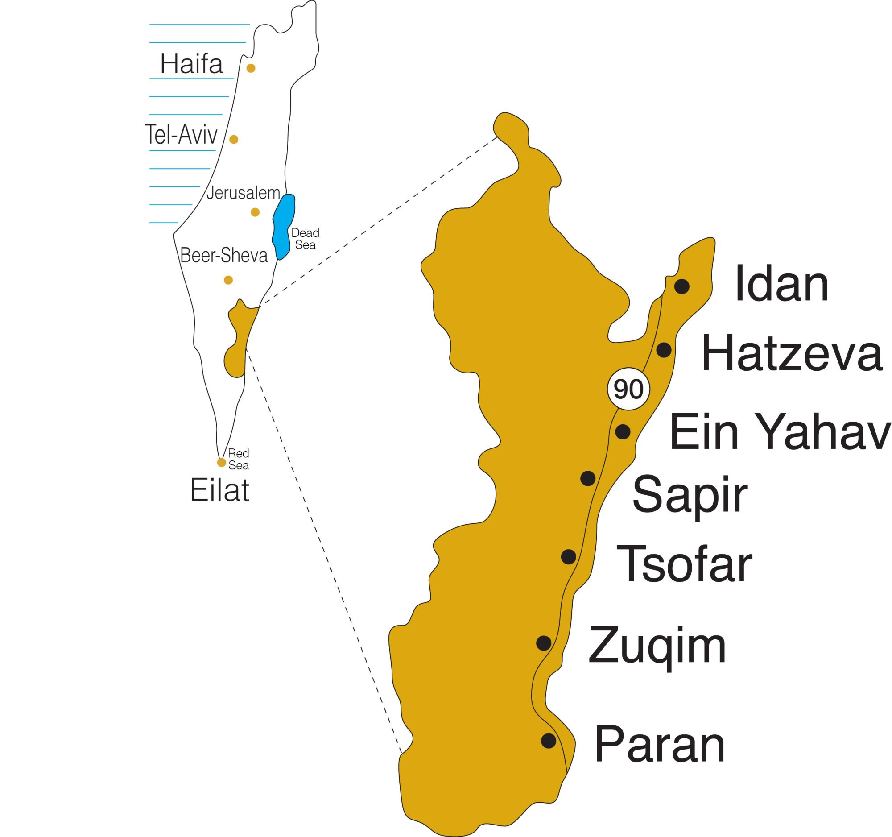

AICAT – Arava International Center for Agriculture Training berlokasi di Central Arava Regional Council, di selatan Israel dekat perbatasan Yordania. Kawasan ini mencakup 6% dari total luas wilayah Israel.

AICAT berlokasi di Central Arava Regional Council, di wilayah selatan Israel dekat perbatasan Yordania. Kawasan yang tampak tandus ini justru menjadi laboratorium hidup teknologi pertanian tercanggih di dunia, memanfaatkan sistem irigasi tetes, sensor tanah, dan rumah kaca modern.
Sumber penghidupan utama di Arava berasal dari pertanian modern yang sangat maju. Teknologi mutakhir yang digunakan di Arava berada di garis terdepan pertanian Israel dan dunia, menjadikan kawasan ini destinasi belajar ideal bagi para petani internasional.